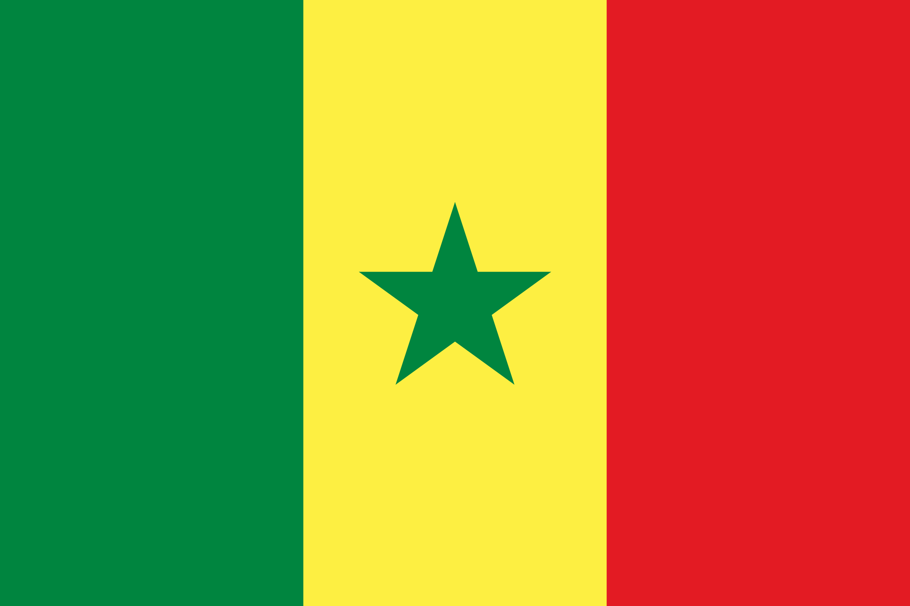
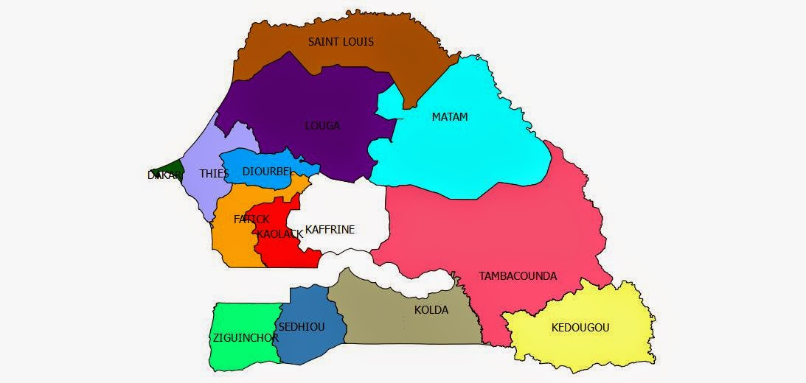

Presentation du senegal
Le Sénégal se situe à l’avancée la plus occidentale du continent africain dans l’Océan Atlantique, au confluent de l’Europe, de l’Afrique et des Amériques, et à un carrefour de grandes routes maritimes et aériennes.
Géographie
D’une superficie de 196 722 km2, il est limité au nord par la Mauritanie, à l’est par le Mali, au sud par la Guinée et la Guinée Bissau, à l’ouest par la Gambie, et par l’Océan Atlantique sur une façade de 500 km. Dakar (550 km2), la capitale, est une presqu’île située à l’extrême Ouest.
Relief, hydrographie
Pays plat aux sols sablonneux ne dépassant pas 130 m d’altitude sauf à la frontière sud-est vers la Guinée. Trois fleuves traversent le pays d’est en ouest : le Sénégal (1700 km) au nord, la Gambie (750 km) et la Casamance (300 km) au sud
Climat, végétation
Climat tropical sec caractérisé par deux saisons : une saison sèche de novembre à juin et une saison des pluies de juillet à octobre. Trois types de végétation : forêt au sud, savane au centre et steppe au nord.
| Population (Projections 2020) | 16 705 608 |
| Population totale des femmes | 8 391 358 |
| Superficie (km2) | 196 712 |
| Densité (Nbre d’hbts/km2) en 2020 | 85 |
Organisation politique
La République du Sénégal est laïque, démocratique et sociale. Elle assure l’égalité devant la loi de tous les citoyens, sans distinction d’origine, de race, de sexe, de religion. Elle respecte toutes les croyances.
La langue officielle de la République du Sénégal est le français. Les langues nationales sont le Diola, le Malinké, le Pular, le Sérère, le Soninké, le Wolof et toute autre langue nationale qui sera codifiée.
Régime présidentiel pluraliste : le président de la République est élu au suffrage universel et pour sept ans. L’actuel président de la République, Macky Sall, est élu le 25 mars 2012.
Le Parlement : Les assemblées représentatives de la République du Sénégal portent les noms d’Assemblée nationale et de Sénat. Leurs membres portent les titres de députés à l’Assemblée nationale et de sénateurs.
Organisation administrative
Quatorze régions dont les chefs-lieux sont les principales villes : Dakar, Diourbel, Fatick, Kaffrine, Kédougou, Kaolack, Kolda, Louga, Matam, Saint Louis, Sédhiou, Tambacounda, Thiès, Ziguinchor.
